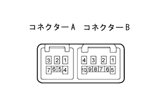
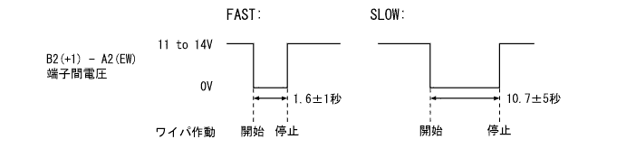
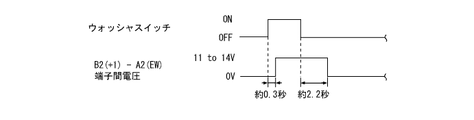

Windshield Wiper Switch Assembly On-vehicle Inspection |
| 1. Inspect Windshield Wiper Switch Assembly |
 |
Intermittent Operation Inspection (Front Wiper)
Turn the IG ON and set the front wiper switch to INT.
Using SST (Toyota electrical tester), measure the voltage between terminals B2 (+1) and A2 (EW) when the intermittent wiper relay is operated.

Operation Inspection (Front Washer)
Turn the IG ON and turn the front wiper switch OFF.
Using SST (Toyota electrical tester), connect the SST positive terminal to terminal B2 (+1) and the SST negative terminal to terminal A2 (EW) of the connector, and measure the voltage between terminals B2 (+1) and A2 (EW) when the washer switch is turned ON and OFF.
